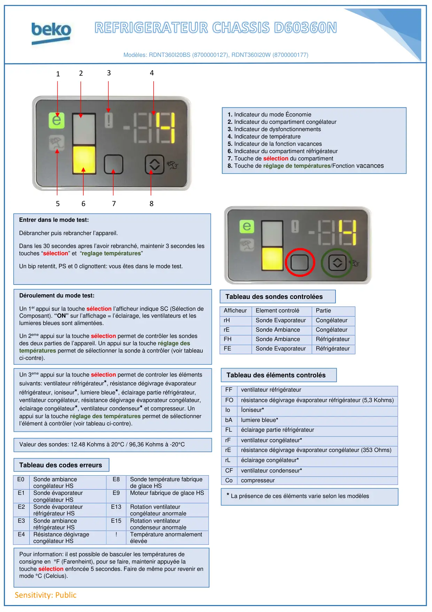

ProgrTest D60360N RDNT360I20

Sensitivity: Public1Tableau des codes erreursModèles: RDNT360I20BS (8700000127), RDNT360I20W (8700000177)AfficheurElement controléPartierHSonde EvaporateurCongélateurrESonde AmbianceCongélateurFHSonde AmbianceRéfrigérateurFESonde EvaporateurRéfrigérateurFFventilateur réfrigérateurFOrésistance dégivrage évaporateur réfrigérateur (5,3 Kohms)Ioİoniseur*bAlumiere bleue*FLéclairage partie réfrigérateurrFventilateur congélateur*rErésistance dégivrage évaporateur congélateur (353 Ohms)rLéclairage congélateur*CFventilateur condenseur*CocompresseurE0Sonde ambiancecongélateur HSE8Sonde température fabriquede glace HSE1Sonde évaporateurcongélateur HSE9Moteur fabrique de glace HSE2Sonde évaporateurréfrigérateur HSE13Rotation ventilateurcongélateur anormaleE3Sonde ambianceréfrigérateur HSE15Rotation ventilateurcondenseur anormaleE4Résistance dégivragecongélateur HS!Température anormalementélevée23456781. Indicateur du mode Économie2. Indicateur du compartiment congélateur3. Indicateur de dysfonctionnements4. Indicateur de température5. Indicateur de la fonction vacances6. Indicateur du compartiment réfrigérateur7. Touche de sélection du compartiment8. Touche de réglage de températures/Fonction vacancesEntrer dans le mode test:Débrancher puis rebrancher l’appareil.Dans les 30 secondes apres l’avoir rebranché, maintenir 3 secondes lestouches “sélection” et “reglage températures”Un bip retentit, PS et 0 clignottent: vous êtes dans le mode test.Déroulement du mode test:Un 1er appui sur la touche sélection l’afficheur indique SC (Sélection deComposant). “ON” sur l’affichage = l’éclairage, les ventilateurs et leslumieres bleues sont alimentées.Un 2eme appui sur la touche sélection permet de contrôler les sondesdes deux parties de l’appareil. Un appui sur la touche réglage destempératures permet de sélectionner la sonde à contrôler (voir tableauci-contre).Tableau des sondes controléesTableau des éléments controlésUn 3eme appui sur la touche sélection permet de controler les élémentssuivants: ventilateur réfrigérateur*, résistance dégivrage évaporateurréfrigérateur, ioniseur*, lumiere bleue*, éclairage partie réfrigérateur,ventilateur congélateur, résistance dégivrage évaporateur congélateur,éclairage congélateur*, ventilateur condenseur* et compresseur. Unappui sur la touche réglage des températures permet de sélectionnerl’élément à contrôler (voir tableau ci-contre).Valeur des sondes: 12.48 Kohms à 20°C / 96,36 Kohms à -20°CPour information: il est possible de basculer les températures deconsigne en °F (Farenheint), pour se faire, maintenir appuyée latouche sélection enfoncée 5 secondes. Faire de même pour revenir enmode °C (Celcius).* La présence de ces éléments varie selon les modèles
1 / 1